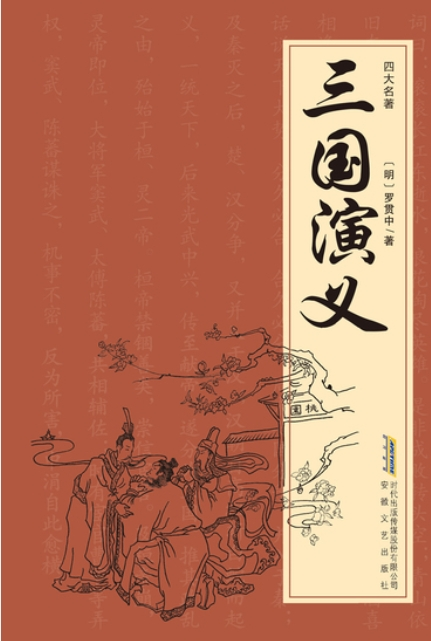
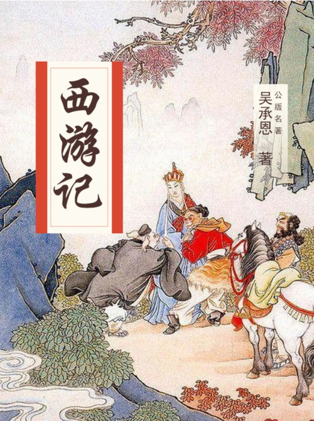
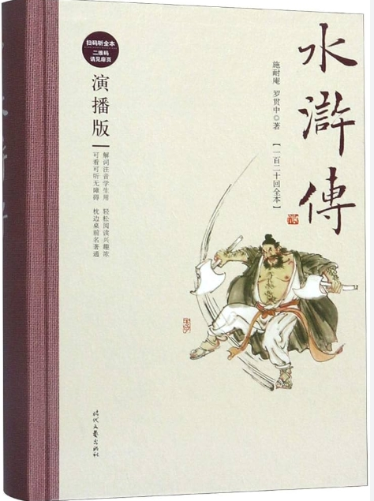

三国演义
以三国时期的历史为背景，讲述了魏、蜀、吴三国争霸的故事。通过诸葛亮、曹操、刘备、孙权等英雄人物的智勇与争斗，展现了忠诚、智谋、权力斗争等复杂的政治与军事局面。小说通过众多的战役与谋略，塑造了深刻的历史人物形象，成为中国文学史上的经典之作。
红楼梦
中国古代文学的巅峰之作，讲述了贾宝玉与林黛玉、薛宝钗等人的爱情悲剧以及贾、史、王、薛四大家族的兴衰。通过贾宝玉这一人物的成长与变化，展现了封建社会的腐朽与崩塌。小说深刻描写了人物性格、社会背景及人性的复杂。

西游记
讲述了唐僧师徒四人西天取经的故事，书中的孙悟空、猪八戒、沙僧、唐僧形象深入人心。孙悟空的机智与勇敢，猪八戒的憨厚与幽默，以及唐僧的坚定与仁慈，构成了故事的核心。全书通过奇幻的冒险表现了坚持、忠诚、智慧与成长。

水浒传
讲述北宋时期，108位梁山好汉反抗腐败政府的故事。这些英雄人物因种种原因被迫聚集在梁山，揭示了民众反抗压迫、为正义而战的主题。小说充满了英雄豪杰的气概，同时也展示了忠诚、义气与英雄主义的复杂性。